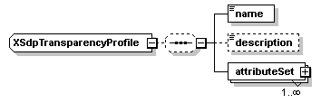
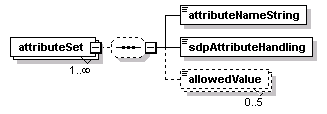
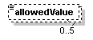

| diagram |  | ||
| namespace | http://www.cisco.com/AXL/API/10.5 | ||
| children | name description attributeSet | ||
| used by |
|
||
| source | <xsd:complexType name="XSdpTransparencyProfile"> <xsd:sequence minOccurs="0"> <xsd:element name="name" type="xsd:string" nillable="false" minOccurs="1" maxOccurs="1"/> <xsd:element name="description" type="xsd:string" nillable="false" minOccurs="0" maxOccurs="1"/> <xsd:element name="attributeSet" minOccurs="1" maxOccurs="unbounded"> <xsd:complexType> <xsd:complexContent> <xsd:extension base="axlapi:XCommonMembersExtension"> <xsd:sequence minOccurs="0"> <xsd:element name="attributeNameString" type="xsd:string" nillable="false" minOccurs="1" maxOccurs="1"/> <xsd:element name="sdpAttributeHandling" type="xsd:string" minOccurs="1" maxOccurs="1"/> <xsd:element name="allowedValue" type="xsd:string" minOccurs="0" maxOccurs="5"/> </xsd:sequence> </xsd:extension> </xsd:complexContent> </xsd:complexType> </xsd:element> </xsd:sequence> </xsd:complexType> |
element XSdpTransparencyProfile/name
| diagram | |||||
| type | xsd:string | ||||
| properties |
|
||||
| source | <xsd:element name="name" type="xsd:string" nillable="false" minOccurs="1" maxOccurs="1"/> |
element XSdpTransparencyProfile/description
| diagram |  |
||||||||
| type | xsd:string | ||||||||
| properties |
|
||||||||
| source | <xsd:element name="description" type="xsd:string" nillable="false" minOccurs="0" maxOccurs="1"/> |
element XSdpTransparencyProfile/attributeSet
| diagram |  | ||||||
| type | extension of axlapi:XCommonMembersExtension | ||||||
| properties |
|
||||||
| children | attributeNameString sdpAttributeHandling allowedValue | ||||||
| source | <xsd:element name="attributeSet" minOccurs="1" maxOccurs="unbounded"> <xsd:complexType> <xsd:complexContent> <xsd:extension base="axlapi:XCommonMembersExtension"> <xsd:sequence minOccurs="0"> <xsd:element name="attributeNameString" type="xsd:string" nillable="false" minOccurs="1" maxOccurs="1"/> <xsd:element name="sdpAttributeHandling" type="xsd:string" minOccurs="1" maxOccurs="1"/> <xsd:element name="allowedValue" type="xsd:string" minOccurs="0" maxOccurs="5"/> </xsd:sequence> </xsd:extension> </xsd:complexContent> </xsd:complexType> </xsd:element> |
element XSdpTransparencyProfile/attributeSet/attributeNameString
| diagram | |||||
| type | xsd:string | ||||
| properties |
|
||||
| source | <xsd:element name="attributeNameString" type="xsd:string" nillable="false" minOccurs="1" maxOccurs="1"/> |
element XSdpTransparencyProfile/attributeSet/sdpAttributeHandling
| diagram | |||
| type | xsd:string | ||
| properties |
|
||
| source | <xsd:element name="sdpAttributeHandling" type="xsd:string" minOccurs="1" maxOccurs="1"/> |
element XSdpTransparencyProfile/attributeSet/allowedValue
| diagram |  | ||||||
| type | xsd:string | ||||||
| properties |
|
||||||
| source | <xsd:element name="allowedValue" type="xsd:string" minOccurs="0" maxOccurs="5"/> |
XML Schema documentation generated by XMLSpy Schema Editor http://www.altova.com/xmlspy